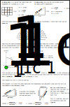
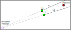

Triangulate locations using two perspectives
Estimate the location or area of a distant feature by providing two observation locations and feature directions.
Already know what you're doing? Jump to the tool!
Want to learn more about triangulation?
Instructions
The situation. You and a friend, that is located at some distance from yourself but which you can communicate with, are located in the forest. You both report seeing smoke from a fire at several kilometres from yourselves. You would like to know the location of it and make sure it is put out as it's dry season. As this is a forested region and the fire may go out, or you simply won't see it once you begin walking through the dense forest, it may not be possible to view the objective again as you approach it. Simply walking towards where you think it may be is a bad idea. You're likely to underestimate it's distance as well as lose your orientation (the direction of the objective).
Luckily both of have good compasses and the same grid map. By using both your observations you can triangulate the location of the objective. Triangulation allows you the determining the location of a third point by using the known location of two points and their respective directions to the third.

Determine your locations. Using a map with grid cells available, as shown adjacent, note the location (e.g., C1, E5) of each observer.
Determine directions of feature. Then for each observer indicate the compass direction of the objective (e.g., North is 0, East 90, South 180, West 270).
Click Triangulate and an estimated area of where the feature is located will be shown.

Improve accuracy. The size of the area the feature is located likely in, shown in green above, is due to observation areas being large (the whole grid cell). You can provide your location more accurately using the precision options that will appear after submitting your first four parameters (as shown to the left).

The results. The estimation area is now much smaller than before thanks to the added accuracy of observation locations.
Note that for this improved accuracy method a small uncertainty is added to the compass directions to provide an area rather than a single point. Poor compass readings means that the feature may be located outside the resulting estimation area.
Now try it out for yourself below.
Triangulation inputs
Provide the grid coordinate locations and headings from two perspectives.
Advanced inputs
Identify the location of each observer within the grids to increase precision and reduce the triangulation area below.
Results
Submit inputs above to see resulting map.
How to triangulate
Given two locations, with coordinates and headings (compass directions in degrees), how can you triangulate another point?
Let us define the two locations L1 and L2 as having the following x and y values from a cartesian coordinate system:
- L1: x1, y1
- L2: x2, y2
At each location the following compass heading readings are taken:
- L1: h1
- L2: h2
To triangulate a location we must convert these locations and compass headings into linear equations.
A line represented as an equation
We must convert and reorder the above components to create the equations for each line. A line (in slope intercept form) takes the form y = mx + b where:
- m is the slope, the angle or steepness of the line
- b is the y intercept, where the line touches the vertical y-axis when x=0
Determining slope from compass heading
Before converting a compass reading to a slope, let's be clear about what is meant by slope.
Slopes can now be calculating by simply getting the inverse of the tangent:
1/tan(heading)
Equation 1: Calculating slope.
If your Tangent function (tan) expects radians rather than degrees you can integrate the conversion:
1/tan(heading/180*π) where π≈3.1415
Equation 2: Calculating slope and conversion to radians.
This can now provide you the slope for each line.
- L1: m1 = 1/tan(h1)
- L2: m2 = 1/tan(h2)
To create the linear equation the y-intercepts are still missing: b1 and b2.
Determining y-intercept
We now know the slope but need to know how to position the line on the map or graph.
Given that we are aiming for a slope intercept form of the linear equation (y = mx + b) we can simply reorder the equation by isolating b at the location of the measurment:
b = y - mx
Equation 3: Solving for the y-intercepts for both L1 and L2.
As we know the coordinates (x, y) and now the slope for each location, we can solve for b.
- L1: b1 = y1 - m1x1
- L2: b2 = y2 - m2x2
Resulting in knowning the slope and intercepts for both lines and linear equations:
- L1: y = m1x + b1
- L2: y = m2x + b2
Now that both linear equations are known, it is time to solve for where they intercept.
Calculating the intercept of two lines
Given two linear equations it is possible to solve their intercept.
Where the two lines intercept they have the same x and y values. We can solve for xi, at the intercept:
y1 = y2,
m1xi + b1 = m2xi + b2,
m1xi - m2xi = b2 - b1,
xi(m1 - m2) = b2 - b1,
xi = (b2 - b1) / (m1 - m2),
Equation 4: Solving the x coordinate of the intercept, xi.
And for the y coordinate intercept, yi, we need only to substitute into either of the linear equations, for example within the first:
yi = m1xi + b1
yi = m1(b2 - b1) / (m1 - m2) + b1
Equation 5: Solving the y coordinate of the intercept, yi.
Equations 4 and 5 allow solving the interception location of both linear equations. In practice however, there's error, making compass readings and calculated intercepts unrealistic. The amount of error will depend on a variety of factors, such as compass reading error, compass error (e.g. due to metal nearby), and magnetic declination.
Limitations
It should be noted that the above doesn't always function. When lines are parallel, vertical or horizontal, some additional or alternative steps need to be taken.
Further, in some cases, unexpected results can occur if the inputs are wrong either from poor accuracy or data entry. For example, let's say two observers note the location of an objective but their compass readings have too much error, they may get a result showing the triangulated location in the opposite direction than expected. See below.

Compensating for error
To create areas of uncertainty rather than points of intersection, Rusttrian simply repeats the above process with readings that are +1 and -1 degrees from every compass heading reading. This creates a multitude of intersection points, particularly for the grid (although the grid does not add error to compass headings as there is already large uncertainty from the grid). The outwards-most points are selected using the Quickhull algorithm.
This process creates intersection areas, or areas of uncertainty, as shown below.